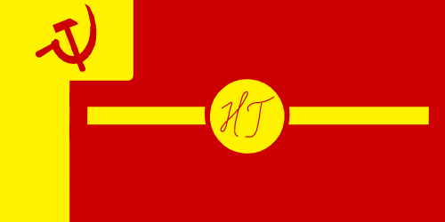
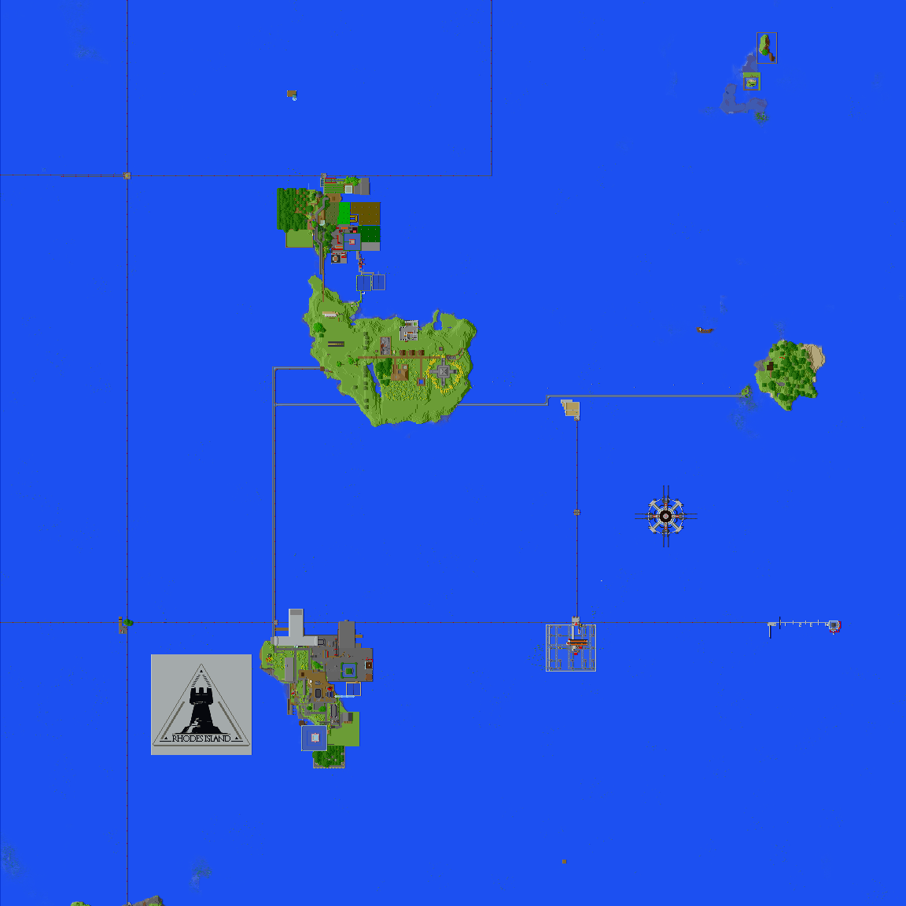

区旗
地图
组成
地图中从南到北依次为 NGA、NGB、NGC，东部为 NG 东方群岛 (NGEastern Islands，NGEI)
生物群系
蘑菇岛 (没有蘑菇的屑蘑菇岛)、海洋、森林、沙滩 (很小但它确实是个沙滩)
住房
入住包分配，也可以申请之后在指定地区自建房
坐标
-150 -1900左右
人口
- 当前人数：7人 (截至2023/01/12)
- 最大可承受人口：12人 (可能更多)
政体
苏维埃制
管理者
新格里布哥罗德地方苏维埃 (the Local Sovit of NG，LSNG)
功能性建筑
NGA：
NGB：
NGC：
交通：
NGEI：
历史简介
新格里布哥罗德市 (以下简称NG) 的前身为格里布哥罗德新区 (NAG)，2022/09/03，新区人民在腐竹的支持下推翻了市长StunningJeans93的九三主义(3)政权， 建立了苏维埃政权。之后，北方二岛被划入了LSNG的管理范围，NG进入高速发展期。经过两个多月的发展，NG的资源已经实现完全公有制(4)，进入社会主义中级阶段。
文物
- 全服第一个刷铁机
注释
- (1) 地图由于技术原因不能随时更新，一切情况以文字介绍为准，地图只用作参考
- (2) by地图画狂魔腐竹
- (3) 指没事就搞一些没什么用还烂的基建和游戏玩法，详情见地区-内部梗页面
- (4) 可按需分配的资源： 各种普通食物、建材、石制物品、木制物品、除下界合金之外的所有矿物、玩家住房、怪物资源等